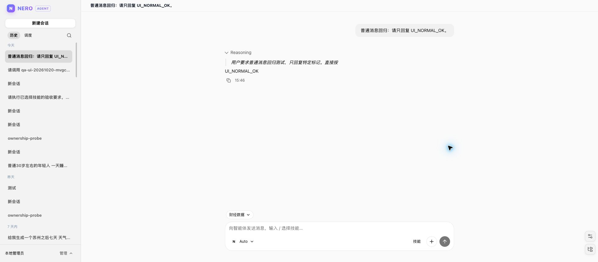

N
NERO / AGENT
同一张桌面，
四种时间尺度。
从一次搜索，到几天后自动回来。工作只需要一个能留住上下文的地方。
NOWMINUTESDAYSMONTHS
秒
搜索
Tavily 与网页读取，把外部信息带进当前对话。
SEARCH / FETCH分钟
编辑
在工作区查找、读取、改写，文件留在会话目录里。
GLOB / GREP / EDIT天
调度
定时任务在隔离线程执行，管理页有状态和日志。
CRON / RUNS长期
沉淀
模型目录与技能版本，让下一次不用从零开始。
MODELS / SKILLS“不是一次性的问答，是可以回来的工作台。”

图 02 / 同一会话里的回答与输入框